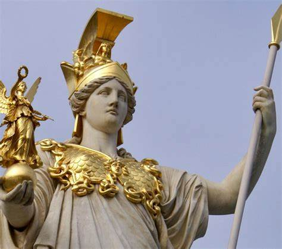
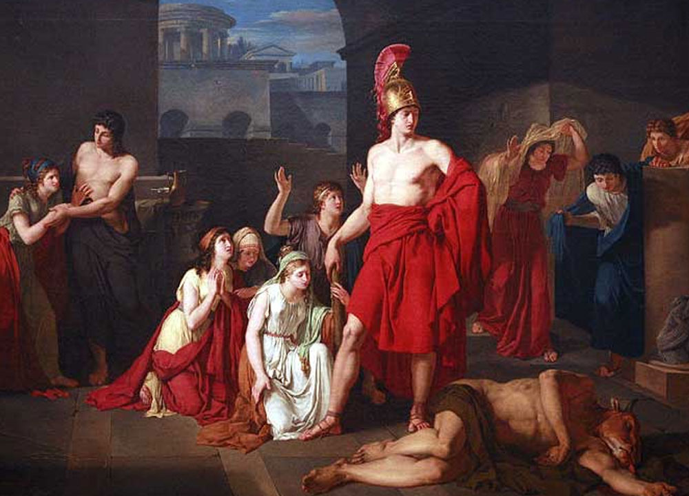
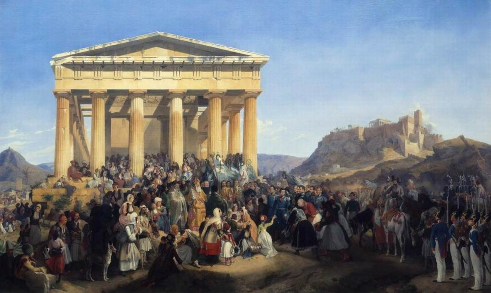

Top 10 facts you probably did not know about Athens
It’s Europe’s oldest capital city.
Athens’ origins date back to 3,000 B.C. To put its age into perspective: the first permanent settlement in the United States (St. Augustine, Florida) wasn’t founded until 1565!The ancient Olympic games were never actually held there.
The ancient Olympic games were never actually held there. Athens was the birthplace of the modern Olympic games in 1896. However, the ancient Olympics were never actually held in the Greek capital.It was the birthplace of democracy.
In 500 B.C., a system was enacted in Athens where eligible citizens could directly vote on laws – giving rise to democracy.
The marathon was named after a long run to Athens in 490 B.C.
If you’ve ever run (or would like to run) a marathon, you can thank Pheidippides – a Greek soldier who ran from Marathon, Greece to Athens in 490 B.C. His long run inspired today’s 26.2 mile “marathon” event.It’s home to one of Greece’s 18 UNESCO World Heritage Sites.
The Acropolis of Athens, built in 448 B.C. for the Greek goddess Athena, is one of the world’s most famous archaeological sites. It unsurprisingly earned a spot on the UNESCO World Heritage Site list along with 17 other incredible sights in Greece.It was the first European Capital of Culture.
Designated by the European Union each year, the European Capital of Culture celebrates richness and diversity of culture in Europe. Athens was the first city to earn this title.-
The first ever plays were performed in Athens.
Athens set the precedent for performing arts, with a history of theater that dates back thousands of years. Today, there are nearly 150 theaters in the city. It’s one of the only cities to have experienced all types of government.
Monarchy, democracy, socialism, capitalism, communism… you name it, Athens has experienced it.The highest temperature ever recorded in Europe was recorded in Athens.
On July 10, 1977, the temperature in Athens reached a record breaking high of 118.4 °F – the hottest temperature ever recorded in Europe.About 18 million tourists visit Athens each year.
That’s about six times Athens’ total population! The Acropolis, the Parthenon, and the Temple of Olympian Zeus are three of the many must-see attractions that draw millions of visitors to Athens each year.
History of athens
1.The city of Athens, Greece is one of the world’s oldest cities with a history spanning approximately 3,400 years. According to Greek mythology, the city was named after the goddess Athena after she won a competition with Poseidon over who would become the protector of the city

2.According to the tradition, Athens was founded, when the king Theseus united in a state several settlements of Attica. The last king of ancient Athens was Kodros, who sacrificed his life in order to save the homeland. Later came to power the nobles (wealthy landowners). The nobles ruled Athens by their consul the Supreme Court (Arios Pagos), from this consul where elected the 9 rulers of Athens . During this time was existed the assembly of the Athenian citizens (Ecclesia of Demos) but during this period did’t had the power that had later with the lows of Solon.

3.In 1834, Athens became the capital of the kingdom of Greece, which, following a national referendum in 1974, is now a Republic, and under the Constitution voted for in 1975 has a President, elected every five years and for up to two terms, by the Greek Parliament. Till that time, and with the dark exception of the few dark years that Greece came under German Nazi occupation during WWII, the Greek flag proudly flies on the Acropolis rock and reminds the world of the values and glory that Greece still represents.

Contacts: